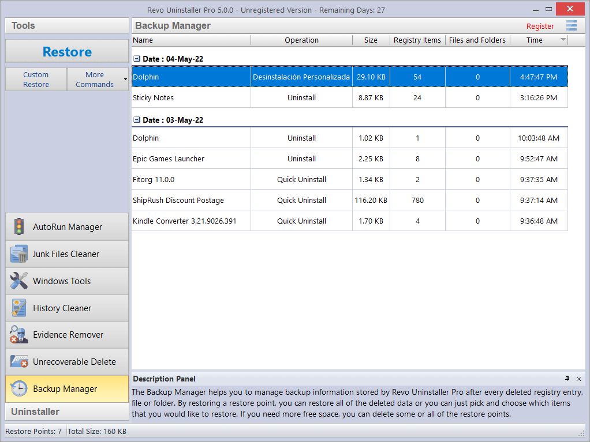

Revo Uninstaller 到底值不值得掏钱？三年付费用户算完这笔账
从免费版基础卸载到 Pro 版的残留扫描、数据擦除、批量卸载，按三种使用强度拆解成本与替代方案，帮你三秒对号入座。
Revo Uninstaller官网 上那个界面朴素、存在感不强的卸载工具，到底值不值得掏钱？这个问题我琢磨了快三年——从最初装完卸载完的"用完即走"，到半年前决定续第三年授权，中间经历过好几次"要不要换免费工具"的挣扎。现在账算透了，写下来给同样在犹豫的人。

先把账面上的数字摆出来
Revo 的定价其实挺直接：永久授权大约四千元上下，单年订阅不到一百块，还有一个功能阉割的免费版叫 Revo Uninstaller Free。官方下载页面上把三个版本的差异列得很清楚，扫一眼就能对号入座。这个定价策略挺鸡贼——单年订阅门槛极低，低到你懒得货比三家；但它不卖月度订阅，意思很明确："要么用免费的，要么给我准备好一整年的预算。"
免费版和 Pro 版之间的鸿沟比你想象的大。免费版只保留了最基础的卸载功能：启动目标程序自带的卸载器，然后扫一遍注册表残留。注意，这里的"扫描"是最粗糙的那种——只查卸载器自己报告过的路径，不会做反向追踪、不会按文件时间戳关联分析、不会按服务和驱动自动归类。扫描完的残留列表也是一坨平铺的键值，不标粗体、不分"这个肯定是该删的"和"这个可能是共享的"，全靠你自己判断。
Pro 版在基础卸载之上加了三层东西：第一层是智能分析和日志数据库，卸载前先对目标程序做反向追踪，把它在系统里动过的所有注册表键、文件、服务、驱动一次性抓干净；第二层是三档扫描强度（Safe 安全 / Moderate 中等 / Advanced 高级）和分组展示，残留条目自动按"肯定该删"和"可能共享"粗体标记，不会让你在几百条注册表项里瞎猜；第三层是一整套附加工具——批量 Quick Uninstall、History Cleaner 清浏览器和系统历史、Evidence Remover 擦空闲磁盘空间、Unrecoverable Delete 安全擦除指定文件，还有最让人放心的 Backup Manager 注册表备份。
分三档用户算时间账
我不打算按功能清单一项项罗列 Pro 版比免费版多了什么——那种清单在官网和评测里能找到一大堆。真正决定值不值的，是你在卸载这件事上的时间投入和风险容忍度。按这个维度，可以把用户分成三类。
轻度用户：半年卸一次，每次三分钟
这档用户的典型画像：新电脑买回来装个 Office 和微信，半年后想换个软件才想起卸载。对他们来说，免费版完全够用——基础卸载器启动、跑完、扫一遍残留、删完。全程三分钟。Pro 版的智能分析和粗体标记确实更让人放心，但三分钟本来就没什么好担心的。
结论：永远不用付。 省下这笔钱不如去买杯咖啡。唯一的例外是你恰好有一份公司报销预算、又确实不想在注册表上多花一秒钟——这种情况 Pro 版的"零确认一键 Quick Uninstall"确实省时间，但前提是你不是那种卸完软件总要把注册表翻三遍才放心的人。
主力用户：每月卸两三个，卸完还想搞干净点
这档就是我自己。每月因为工作需要装各种软件测试、然后卸掉再换下一个——从压缩工具到 IDE 到虚拟机管理工具，每个都在系统里留下一堆痕迹。
免费版在这档会碰到两个痛点。第一，残留扫描太粗糙。卸完一个 IDE，免费版扫出来二十多条注册表残留，但其中有一半是它"不确定该不该删"的共享项，不标粗也不分组，全堆在一个窗口里。我第一次用免费版的时候，为了区分哪些该删哪些不该删，对着注册表现查边对照，光清理就花了十几分钟。第二，没有批量卸载。上个月我因为换了电脑管理工具，一口气要卸五个旧软件——免费版只能一个一个来，每个都要启动内置卸载器、等进度条、手动扫残留、手动删。五个软件下来半小时没了。
Pro 版把这两个痛点直接抹平了。粗体标记让我扫一眼就知道哪几条肯定是目标程序的残留、可以直接勾选；Quick Uninstall 支持批量，按住 Ctrl 选五个软件、一个按钮，Revo 在后台依次处理、不需要每一步确认。这两个功能加起来，每次卸载我至少省出十分钟。
算一下成本：单年订阅不到一百块，按每月卸两个软件、每次省十分钟算，一年能省出四小时。一百块买四小时，合二十五块一小时——在北京上海喝杯像样的咖啡都差不多是这个价。而且这四小时还是在"不用盯着屏幕等进度条"的背景时间，你可以继续干别的。
结论：闭眼付。 但建议先买年度订阅试试——如果你用了三个月发现卸载频率其实没那么高，取消也不心疼。
重度用户：每天装卸，还要擦数据
这档用户是做软件测试、或者有敏感数据清除需求的人。Revo Uninstaller Pro 真正的杀招其实不在卸载本身，而在那套数据安全工具——Evidence Remover 和 Unrecoverable Delete。两者的快捷键组合、覆写标准参数、SSD 上的限制条件，这些细节在 Revo Uninstaller文档 里都有详细说明。
Evidence Remover 做的事是用随机数据反复覆写磁盘的空闲空间，让数据恢复软件找不回之前删掉的文件。这个功能对机械硬盘（HDD）有效，对固态硬盘（SSD）意义不大，因为 SSD 的磨损平衡机制让操作系统没法精确控制写入位置。如果你有台式机用的机械硬盘、或者旧笔记本卖之前要擦干净数据，Evidence Remover 是目前 Windows 上最方便的工具之一——选磁盘、选覆写标准、等进度条走完。DoD 5220.22-M 标准（三次覆写）虽然比简单覆写慢三倍，但几百 GB 空闲空间也就半小时的事，比其他专业擦除工具（比如 CCleaner Professional 的类似功能）快不少。
Unrecoverable Delete 则是擦除指定的文件或文件夹。和 Evidence Remover 的区别很明确：Evidence Remover 擦"所有空闲地方"，不管之前删过什么；Unrecoverable Delete 擦"你明确知道的敏感文件"。前者适合"我不知道之前删过什么、但想把整个硬盘擦干净转卖"，后者适合"我刚删了一份公司机密、不想让任何人恢复"。
另外还有 Backup Manager——每次卸载前自动创建注册表备份和 Windows 还原点，卸完之后发现删了不该删的东西，Alt+B 打开备份管理器就能精准恢复。我上个月卸一个杀毒软件的时候，Revo 不小心勾到了另一个安全软件的注册表项，用备份管理器的 Custom Restore 只恢复了被误删的那几条键值，整个过程不到两分钟。如果用免费版的话，要么全量还原（把之前卸载的东西也回滚了），要么就得自己进注册表手动改。

结论：必须付，而且要买永久授权。 单年订阅不划算——这档用户用到第三年的时候，累计省下来的时间和避免的数据泄露风险，已经远远超过四千元。而且永久授权意味着你永远能用，不需要每年想着续费。
不付这笔钱有什么别的路？
说实话，免费替代方案不少。最常用的两个是 Geek Uninstaller 和 Bulk Crap Uninstaller。
Geek Uninstaller 是单文件绿色版，免费版就支持粗体标记和分组展示，扫描强度也是三档，和 Revo Pro 的核心卸载功能差距不大。缺点是没有批量 Quick Uninstall、没有数据擦除工具、没有备份恢复——卸载就是卸载，不会给你留后路。
Bulk Crap Uninstaller 更激进，专门针对批量卸载场景，免费版就支持多选批量。但界面是出了名的丑——纯列表、没有分组、没有粗体标记，适合硬核玩家但不适合怕麻烦的人。另外它没有任何数据安全工具。
还有一个选项：降低使用频率。装卸频率从每月两三个降到半年一次，那免费版的"粗糙"也就不那么刺眼了。但前提是你工作性质允许——如果你是做测试的，想降频率基本不现实。
最后给个对照表
如果你看完了还在犹豫，对照下面这个简单的判断标准就够了：
- 一年卸软件次数在 10 次以内 → 免费版完全够，别花钱
- 每月卸 2 次以上、或者想批量卸载 → 年度订阅值
- 需要擦除数据、或者卸完一定要有恢复保障 → 买永久授权
我自己的选择是永久授权，已经用了快三年了。中间有过几次"要不要换成 Geek Uninstaller"的动摇，但每次卸完软件发现免费工具没帮我把注册表清干净、还要自己手动扫的时候，就会想起当初掏那笔钱的时候心里那句"值不值"——答案是值的。尤其是 Backup Manager 救过我两次误删之后，这个答案就没动摇过。
这套软件的完整资料我同步维护在三个仓库里，方便不同偏好的人取用——喜欢 GitHub 的就看 这里，国内网络想快一点的可以去 Gitee 镜像，而 GitCode 那边也有一份 完整备份，哪个能访问上哪个。